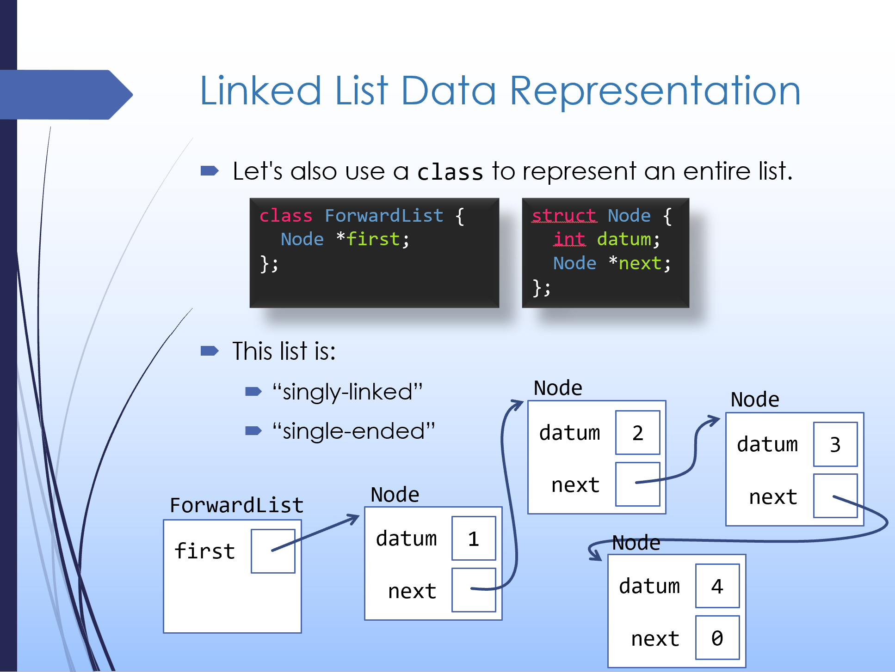

Most any data structure uses one of two fundamental approaches in its underlying data representation:
We've previously covered the contiguous memory approach. In this lecture, we'll begin to explore linked structures. As an initial example, we'll implement a linked list.
In some of the videos for this lecture, I might refer to implementing a linked list on project 4. That's project 5 this term.
|
1: Sequential Containers and Data Structures
First, let's acknowledge the kinds of sequential containers we'd like to build and the applications they're used for. |
|
2: Arrays vs. Linked Lists
2.1
The underlying data structures for these containers must either use contiguous memory or linked structures. Let's take a close look at each approach and compare/contrast the efficiency of several common operations.
2.1 Exercise: Arrays vs. Linked Structures
Describe one of the operations that can be performed more efficiently on an array than on a linked list. Why is this the case and what are the relevant time complexities? Describe one of the operations that can be performed more efficiently on a linked list than on an array. Why is this the case and what are the relevant time complexities? There is no walkthrough video for this question, but you can refer back to the video above for examples. |
|
3: Intro to Linked Lists
3.1
Here we'll consider building an ADT for a linked Linked List, which is the simplest linked data structure. The key idea is that we implement a sequential container by storing several nodes (each individually allocated in dynamic memory) that contain element values and a pointer to the next node in the sequence. There's no requirement that the nodes are contiguous in memory. Specifically, we'll start with a "singly-linked, single-ended" list, which we'll call
3.1 Exercise: Linked List Representation Invariants
Here again is the basic data representation for a linked list:

Brainstorm three different representation invariants for the linked list's data representation. Think about what things must be true for the node structure to make sense, or for functions working with the structure to be able to do their job correctly. Sample solution…
|
|
4: Linked List Implementation
4.1
Let's keep working on the
4.1 Exercise:
ForwardList::pop_front()
Implement the
Theme:
// This exercise is not automatically graded.
// However, getting a correct answer is a bit tricky.
// I highly suggest you check the walkthrough video.
You're welcome to check your solution with this walkthrough video: |
|
5: Traversing a Linked List
5.1
With a data structure based on contiguous memory, walking through increasing indices or addresses is a natural approach. With a linked structure, however, this doesn't work (we can't rely on the contiguous memory assumption anymore). Instead, we have to follow
5.1 Exercise:
ForwardList::print()
Implement the
Theme:
// This exercise is not automatically graded.
// You can check your solution against the walkthrough video.
You're welcome to check your solution with this walkthrough video: |
|
6: Doubly-Linked, Double-Ended Lists
6.1
Let's take a look at three upgrades to our data representation and where they make a difference in terms of efficiency:
6.1
Which of the following are true? |
|
7: The Big Three
One more thing - since our class manages dynamically allocated nodes, we'll need custom implementations of "the big three". |